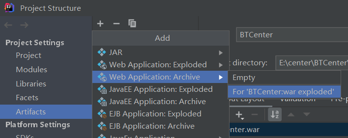
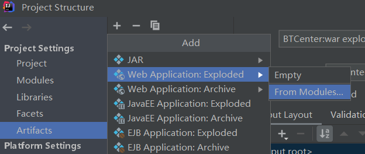
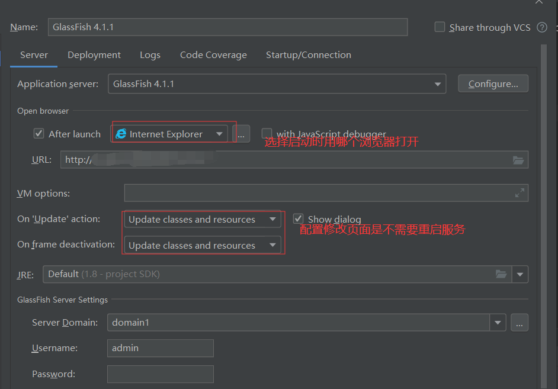
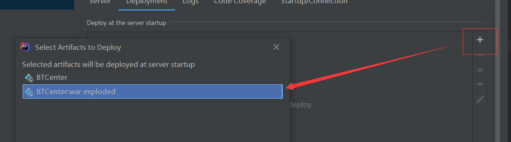
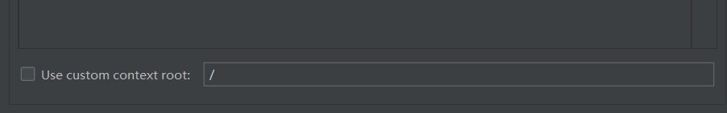

原文出处:本文由博客园博主我是小笨笨提供。
原文连接:https://www.cnblogs.com/benben-0-0-1/p/11943779.html
原文连接:https://www.cnblogs.com/benben-0-0-1/p/11943779.html
将项目打成war包形式。


然后配置glassFish

+号配置启动包

此处配置启动路径

。。。。。。。。
路径也可以在localhost:4848 --->中的Applicaton中去配置